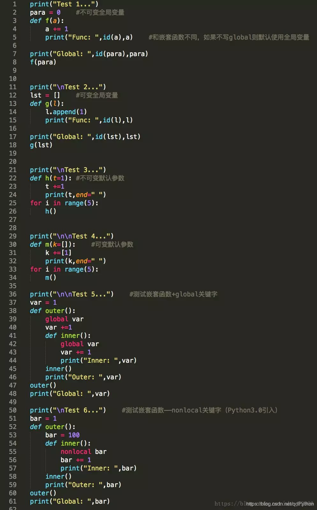
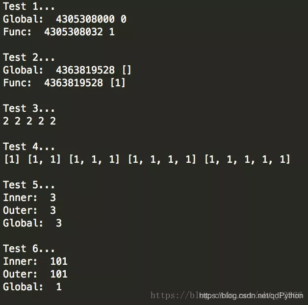

写在前面
Python唯一支持的参数传递方式是『共享传参』（call by sharing）
多数面向对象语言都采用这一模式，包括Ruby、Smalltalk和Java（Java的引用类型是这样，基本类型按值传递）
共享传参是指函数的各个形式参数获得实参中各个引用的副本；也就是说，函数内部的形参是实参的别名（alias）
这种方案的结果是，函数可能会修改作为参数传入的可变对象，但是无法修改那些对象的标识（即不能把一个对象替换为另一个对象）
位置参数
位置参数是最简单的传入参数的方式，在其它的语言中也常常被使用
演示一：
def func(a, b):
print(a+b)
func(1, 2) #3演示二：
def power(x, n):
s = 1
while(n > 0):
n -= 1
s *= n
return s
power(2, 3) #8默认参数
默认参数就是在调用函数的时候使用一些包含默认值的参数
def power(x, n=2):
s = 1
while(n > 0):
n -= 1
s *= n
reutrn s
power(3) #9
power(2, 3) #8定义默认参数要牢记一点：默认参数必须指向不变对象！
#以下这个函数如果被多次调用会在默认添加多个END字符串
def add_end(l = []):
l.append('END')
return l
#为了避免这个问题，应该把传入的默认参数设置为不可变的
def add_end(l = None):
l = []
l.append('END')
return l可变参数
可变参数就是允许在调用参数的时候传入多个（≥0个）参数（类似于列表、字典）
#传入一个列表，严格地说这不是可变参数
def calc(l):
sum = 0
for n in l:
sum += n
return sum
>>> calc([1,2,3])
7
#这才是可变参数，虽然在使用上和列表没有区别，但是参数nums接收到的是一个tuple（这些参数在传入时被自动组组装为一个元祖）
def calc(*nums):
sum = 0
for n in nums:
sum += n
return sum
>>> calc(1,2,3)
7
>>> my_ls = [1,2,3]
>>> calc(*my_ls)
7关键字参数
可变参数允许传入0个～多个参数，而关键字参数允许在调用时以字典形式传入0个或多个参数（注意区别，一个是字典一个是列表）；在传递参数时用等号（=）连接键和值
#用两个星号表示关键字参数
def person_info(name, age, **kw):
print("name", name, "age", age, "other", kw)
>>> person_info("Xiaoming", 12)
name Xiaoming age 12 other{}
>>> person_info("Dahuang", 35, city = "Beijing")
name Dahuang age 35 other {'city':'Beijing'}命名关键字参数
命名关键字参数在关键字参数的基础上限制传入的的关键字的变量名
和普通关键字参数不同，命名关键字参数需要一个用来区分的分隔符*，它后面的参数被认为是命名关键字参数
#这里星号分割符后面的city、job是命名关键字参数
person_info(name, age, *, city, job):
print(name, age, city, job)
>>> person_info("Alex", 17, city = "Beijing", job = "Engineer")
Alex 17 Beijing Engineer #看来这里不再被自动组装为字典不过也有例外，如果参数中已经有一个可变参数的话，前面讲的星号分割符就不要写了（其实星号是写给Python解释器看的，如果一个星号也没有的话就无法区分命名关键字参数和位置参数了，而如果有一个星号即使来自变长参数就可以区分开来）
#Python学习交流QQ群：857662006
#args是变长参数，而city和job是命名关键字参数
person_info(name, age, *args, city, job):
print(name, age, args, city)
>>> person_info("Liqiang", 43, "balabala", city = "Wuhan", job = "Coder")
Liqiang 43 balabala Wuhan Coder参数组合
总结一下，在Python中一种可以使用5中传递参数的方式（位置参数、默认参数、变长参数、关键字参数、命名关键字参数）
注意，这些参数在书写时要遵循一定的顺序即：位置参数、默认参数、变长参数、关键字参数、命名关键字参数（和本文的行文顺序一致）
这里简单举两个例子
def f1(a, b, c=0, *args, **kw):
print("a = ", a, "b = ", b, "args = ", args, "kw = ",kw)
def f2(a, b, c=0, *, d, **kw):
print("a = ", a, "b = ", b, "c = ", c, "d = ", d, "kw = ", kw)
>>> f1(1, 2)
a = 1 b = 2 c = 0 args =() kw = {}
>>> f1(1, 2, c=3)
a = 1 b = 2 c = 3 args = () kw = {}
>>> f1(1, 2, 3, 'a', 'b')
a = 1 b = 2 c = 3 args = ('a', 'b') kw = {}
>>> f1(1, 2, 3, 'a', 'b', x = 99)
a = 1 b = 2 c = 3 args = ('a', 'b') kw = {'x':99}
>>> f2(1, 2, d = 99, ext = None)
a = 1 b =2 c = 0 d = 99 kw = {'ext':None}写在后面
关于Python参数传递，有以下几点提请注意：
1）参数的传递是通过自动将对象赋值给本地变量名来实现的
函数参数在实际中只是Python赋值的另一个实例而已，因为引用可以是以指针的形式来实现的，所有的参数实际上都是通过指针进行传递的，作为参数被传递的对象从来不自动拷贝
2）在函数内部的参数名的赋值不会影响调用者
在函数运行时，在函数头部的参数名时一个新的、本地的变量名，这个变量名是在函数的本地作用域内的，函数参数名和调用者作用域中的变量是没有区别的
3）改变函数的可变对象参数的值也许会对调用者有影响
换句话说，因为参数是简单地赋值给传入的对象，函数就能够就地改变传入的可变对象，因此其结果会影响调用者；可变参数对函数来说可以做输入和输出的
Python的通过赋值进行传递的机制与C++的引用参数选项不完全相同，但是实际中，它与C语言的参数传递模型相当类似：
1）不可变参数“通过值”进行传递
像整数和字符串这样的对象是不可变对象，它们通过对象引用而不是拷贝进行传递的，但是因为无论如何都不可能在原处改变不可变对象，实际的效果就很像创建了一份拷贝
2）可变对象是通过“指针”进行传递的
列表和字典这样的对象也是通过对象引用进行传递的，这一点与C语言使用指针传递数组很相似，可变对象能够在函数内部进行原处的改变，这一点和C数组很像


总而言之，理解Python的变量、函数的关键就是理解『绑定』的概念——绑定就是绑定对象，理解了这一点就好办了